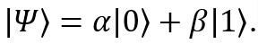
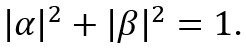
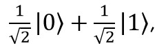
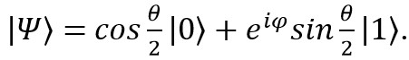

Quantum computation for Digital Humanities
Overview
Recent years showed the benefits of using computers as tools as well as methods from computer science to support research in the humanities. Techniques like databases, visualization, or distant reading have shown how the use of the classical computer can contribute to access knowledge and to broaden the approaches for addressing already stated problems [Barzen_2022]. Now, a new type of computer – quantum computer – is becoming reality.
To what extent and for which fields of applications in the digital humanities this can be beneficially used is still to be explored, but it opens up a whole field of potential questions.
Basic principles of quantum computation (QC)
In the so-called “debate of the century” during the 1927 Solvay Conference, Niels Bohr defended the new quantum mechanics theory as formulated by Werner Heisenberg, whereas Albert Einstein tried to uphold the deterministic paradigm of cause and effect. Albert Einstein famously put forward that “God does not play dice”, after which Niels Bohr countered “Einstein, stop telling God what to do.” Nowadays, the scientific community agrees that Niels Bohr won the debate. This means that our world does not have a fixed script based on cause and effect but is in fact subject to chance. In other words, you can know everything there is to know in the universe and still not know what will happen next [nato_2021].
This new probabilistic paradigm led the way to a better understanding of some key properties of quantum particles which underlie quantum mechanics. Quantum mechanics is generally regarded as the physical theory that is our best candidate for a fundamental and universal description of the physical world. The conceptual framework employed by this theory differs drastically from that of classical physics [stanfordQ]. The improved understanding of fundamental quantum principles is what has spurred the development of next-generation quantum technologies: quantum sensing, quantum communication and quantum computing [nato_2021].
Quantum computing (QC) is a type of computation whose operations can harness the phenomena of quantum mechanics, such as superposition, interference, and entanglement [Wiki].
The main principle of quantum computing (QC) is the use of quantum bits, or qubits, which are the fundamental units of information in quantum systems. Unlike classical bits, which can only be in one of two states (0 or 1), qubits can exist in multiple states at the same time, a phenomenon known as superposition. When it is measured (or observed), however, it is always 0 or 1; the probability of either outcome depends on the qubit's quantum state immediately prior to measurement [Wiki, Barzen_2022].
Another important principle of QC is entanglement, which is a phenomenon in which two or more qubits become correlated in such a way that the state of one qubit affects the state of the others. The properties of the two qubits in entangled state are linked to each other such that by looking (i.e. measuring) one of them, will reveal the other qubit, even when they are at physically large separations. the researchers proved that in any physical theory, entanglement can exist between different systems (entities) if and only if superposition can exist in each of them. The result yields an equivalency between the two concepts that extends beyond the quantum realm [Gill_2022, Tse_2022].
The mathematical fundamentals of quantum computers as well fundamental differences between classical and quantum computation are described, for ex., in [Nielson_2010, Renes_2015, Wiki]:
The bit is the fundamental concept of classical computation and classical information. Quantum computation and quantum information are built upon an analogous concept, the quantum bit, or qubit.
Although qubits, like bits, are realized as actual physical systems, they are treated as abstract mathematical objects. This allows to construct a general theory of quantum computation and quantum information which does not depend upon a specific system for its realization.
As a classical bit has a state – either 0 or 1 – a qubit also has a state. Two possible states for a qubit are the states ∣0❭ and ∣1❭, which correspond to the states 0 and 1 for a classical bit. Notation like ‘∣ ❭’ is called the Dirac notation and it is the standard notation for states in quantum mechanics. The difference between bits and qubits is that a qubit can be in a state other than ∣0❭ or ∣1❭. It is also possible to form linear combinations of states, often called superpositions:
where α and β are the probability amplitudes.
The state of a qubit is could be interpreted as a vector in a two-dimensional complex vector space. The special states ∣0❭ and ∣1❭ are known as computational basis states, and form an orthonormal basis for this vector space. When we measure a qubit we get either the result 0, with probability ∣α∣2, or the result 1, with probability ∣β∣2. Since the probabilities must sum to one,
Geometrically, we can interpret this as the condition that the qubit’s state be normalized to length 1. Thus, in general a qubit’s state is a unit vector in a two-dimensional complex vector space. Such a quantum state vector acts similarly to a classical probability vector, with one key difference: unlike probabilities, probability amplitudes α and β are not necessarily positive numbers. Negative amplitudes allow for destructive wave interference.
A classical bit is like a coin: either heads or tails up. By contrast, a qubit can exist in a continuum of states between ∣0❭ and ∣1❭ – until it is observed. When a qubit is measured, it only ever gives 0 or 1 as the measurement result – probabilistically. For example, a qubit can be in the state
which, when measured, gives the result 0 fifty percent (∣1/√2∣2) of the time, and the result 1 fifty percent of the time. So, the nature of observations on quantum systems is inherently probabilistic.
In geometric representation, any state ∣Ψ❭ of the qubit can be associated with a point on the unit three-dimensional sphere described by spherical coordinates (θ, φ) via the relation
There are an infinite number of points on the unit sphere, so that in principle one could store huge amount of information in the infinite binary expansion of θ. However, when it is measured, a qubit will give only either ∣0❭ or ∣1❭. Furthermore, measurement changes the state of a qubit, collapsing it from its superposition of 0 and 1 to the specific state consistent with the measurement result. For example, if measurement gives 0, then the post-measurement state of the qubit will be ∣0❭. Occurring of this collapse is simply one of the fundamental postulates of quantum mechanics. From a single measurement one obtains only a single bit of information about the state of the qubit.
Individual qubits can be combined into a quantum register resulting in exponentially growing number of data that such a register can hold. Quantum computers, therefore, can access an exponentially large computational space (Hilbert space), where n qubits could be in a superposition state of 2n possible outcomes at any given time. As an example, a quantum register with 50 qubits corresponds to 250 possible combinations of the states of the individual qubits which are again in superposition corresponding to approximately a petabyte of classical data. All these values can be manipulated by a single operation all at once, which is called quantum parallelism. Due to the quantum parallelism, quantum computers can process huge amounts of data in a single step, that leads to a significantly higher computing power and allow quantum computers to tackle large scale space problems [Barzen_2022, Gill_2022].
Quantum computing utilizes a unique class of algorithms known as quantum algorithms (Shor's algorithm, Grover's algorithm, Variational quantum algorithms, etc). These algorithms are specifically designed to take advantage of the principles of quantum mechanics and the capabilities of quantum computers. It is important to note that quantum algorithms are still in the early stages of development, and their practical implementation and scalability on large-scale quantum computers remain a challenge.
Consequently, the quantum computation involves representing information using quantum states, which are complex vectors in a high-dimensional vector space. The evolution of these quantum states is governed by unitary transformations, which can be represented as matrices in this vector space. The probability of measuring a particular state is given by the squared magnitude of its corresponding vector, and the measurement outcome is probabilistic in nature.
The speed at which quantum computers will be able tackle some complex problems can offer new possibilities. Quantum computers could be used by defense planners to do large-scale simulations of military deployments, by scientists to model complex chemical reactions to design new materials, or even by computer scientists to crack cryptography or advanced artificial intelligence tools [deloitte].
Processing speed is not the only benefit that such machines will bring to society. They will bring new philosophies, new approaches to design, new algorithms, new creative artefacts, new economies and so on. There also is growing activity within areas where quantum computing may impact beyond science and technology, including the arts, humanities and fringe interdisciplinary initiatives (Philosophy, Linguistics and Music, amongst others) [Bradley_2018].
Vagueness and uncertainty in historical texts
Potential of quantum computation principles for modelling vagueness and uncertainty in historical texts
Because any such classical system can in principle be described in the language of quantum mechanics, classical information theory is actually a special case of quantum information theory [Nielson_2010]. This postulate potentially allows us to apply the principles of quantum mechanics to the processing of the information that historical texts give us.
Potentials of contribution of quantum computation to processing vagueness and uncertainty in DH and particular in historical texts are discussed below.
One way in which quantum computation could be useful in DH is through its ability to perform complex pattern recognition tasks. For example, quantum machine learning algorithms could be used to identify patterns and relationships, that are not immediately apparent, in text, images, and other digital objects, even when the data is incomplete or noisy. This could help researchers in the humanities identify important themes, connections, and relationships within their datasets, which might otherwise be difficult to discern.
Another potential application of quantum computation in this area is the development of quantum algorithms for information retrieval. These algorithms could be used to search through large collections of historical texts and identify relevant passages that are related to a particular topic or event. By taking into account the uncertainty and vagueness of language, its probabilistic nature, these algorithms could help historians and other researchers to find hidden connections and relationships in the data that might otherwise be missed.
The potential usage of quantum computation for modelling vagueness and uncertainty in historical texts is inspired by the probabilistic nature of quantum mechanics. In quantum mechanics, particles can exist in a superposition of multiple states simultaneously, and their behavior can only be predicted probabilistically. Similarly, in historical texts, there may be multiple interpretations of the same event or concept, and the likelihood of each interpretation being correct may be uncertain. This uncertainty can be modelled using probability theory, which allows us to assign probabilities to different possible interpretations based on the available data. Quantum algorithms can be used to model the probabilistic nature of ancient language by representing the various possible interpretations of a text as different quantum states. Applying quantum computation to the modelling, the process of assigning probabilities to these interpretations can be represented as a linear transformation on these states. By applying quantum algorithms to these states and their associated transformations, we can potentially identify the most likely interpretation of a text based on the available data as well as extract hidden patterns and relationships in the data that might not be immediately apparent.
Such representation could be spread to all sources of uncertainties in historical texts – semantics, vocabulary, translation, historical facts and context. Each of them could have their own set of “states”, contributing on the complexity of the task to be solved.
Another challenge for the modelling is to provide a connection between different characteristics in a formal way, that should correspond to the principle of entanglement of quantum states in QC. For ex., how the historical context could influence translation of the worlds of the text from this historical period and how this connection should be reflected in the model.
Taking into account quantum computation principles, the modelling of vagueness and uncertainty in historical texts, where standard linear algebraic techniques as well as quantum algorithms must be used, is a complex task for the mathematicians and quantum computation specialists.
Conclusions
Potentially, quantum computation can be used to model the uncertainty and vagueness in historical texts by representing them as quantum states and applying quantum algorithms to these states and their associated transformations, leading to accurate and nuanced interpretations of the data. Also, quantum computation techniques may allow for pattern recognition and information retrieval in historical texts.
The above potentials reveal that it is crucial to develop application knowledge in the domain of quantum computing, especially in fields where the necessary understanding of the mathematical and physical foundations cannot be taken for granted. This will allow fully exploration of the potential applications of quantum computing and effectively utilize this powerful technology. Early adoption and expertise in quantum computing will enable significant advancements in DH, opening up new possibilities for innovation and progress.